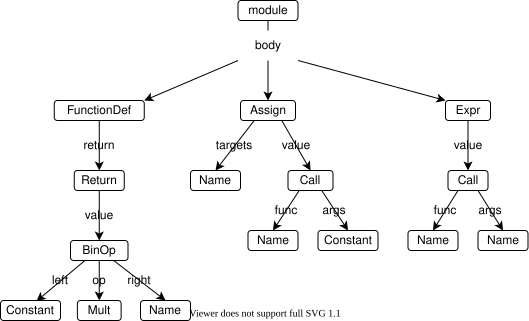
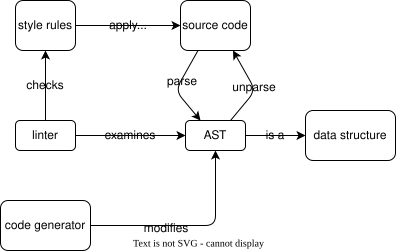

Want to check that our code follows style rules
And doesn't do things that are likely to be bugs
Build a linters
Chapter 11 represented HTML as a DOM tree
We can represent code as an abstract syntax tree (AST)
Each node represents a syntactic element in the program
def double(x):
return 2 * x
result = double(3)
print(result)

import ast
import sys
with open(sys.argv[1], "r") as reader:
source = reader.read()
tree = ast.parse(source)
print(ast.dump(tree, indent=4))
Module(
body=[
FunctionDef(
name='double',
args=arguments(
posonlyargs=[],
args=[
arg(arg='x')],
kwonlyargs=[],
kw_defaults=[],
Could walk the tree to find FunctionDef nodes and record their name properties
But each node has a different structure, so we would have to write a recursive function for each type of node
Each time it reaches a node of type Thing, it looks for a method visit_Thing
class CollectNames(ast.NodeVisitor):
def __init__(self):
super().__init__()
self.names = {}
def visit_Assign(self, node):
for var in node.targets:
self.add(var, var.id)
self.generic_visit(node)
def visit_FunctionDef(self, node):
self.add(node, node.name)
self.generic_visit(node)
def add(self, node, name):
loc = (node.lineno, node.col_offset)
self.names[name] = self.names.get(name, set())
self.names[name].add(loc)
def position(self, node):
return ({node.lineno}, {node.col_offset})
CollectNames constructors invokes NodeVisitor constructor
before doing anything else
visit_Assign and visit_FunctionDef must call self.generic_visit(node) explicitly
to recurse
position methods uses the fact that every AST node remembers where it came from
with open(sys.argv[1], "r") as reader:
source = reader.read()
tree = ast.parse(source)
collector = CollectNames()
collector.visit(tree)
print(collector.names)
python walk_ast.py simple.py
{'double': {(1, 0)}, 'result': {(4, 0)}}
has_duplicates = {
"third": 3,
"fourth": 4,
"fourth": 5,
"third": 6
}
print(has_duplicates)
{'third': 6, 'fourth': 5}
class FindDuplicateKeys(ast.NodeVisitor):
def visit_Dict(self, node):
seen = Counter()
for key in node.keys:
if isinstance(key, ast.Constant):
seen[key.value] += 1
problems = {k for (k, v) in seen.items() if v > 1}
self.report(node, problems)
self.generic_visit(node)
def report(self, node, problems):
if problems:
msg = ", ".join(p for p in problems)
print(f"duplicate key(s) {{{msg}}} at {node.lineno}")
duplicate key(s) {fourth, third} at 1
def label():
return "label"
actually_has_duplicate_keys = {
"label": 1,
"la" + "bel": 2,
label(): 3,
"".join(["l", "a", "b", "e", "l"]): 4,
}
Not wrong, but clutter makes code harder to read
Have to take scope into account
So keep a stack of scopes
class FindUnusedVariables(ast.NodeVisitor):
def __init__(self):
super().__init__()
self.stack = []
def visit_Module(self, node):
self.search("global", node)
def visit_FunctionDef(self, node):
self.search(node.name, node)
namedtuple from Python's standard libraryScope = namedtuple("Scope", ["name", "load", "store"])
If the variable's value is being read,
node.ctx (short for "context") is an instance of Load
If the variable is being written to,
node.ctx is an instance of Store
def visit_Name(self, node):
if isinstance(node.ctx, ast.Load):
self.stack[-1].load.add(node.id)
elif isinstance(node.ctx, ast.Store):
self.stack[-1].store.add(node.id)
else:
assert False, "Unknown context"
self.generic_visit(node)
def search(self, name, node):
self.stack.append(Scope(name, set(), set()))
self.generic_visit(node)
scope = self.stack.pop()
self.check(scope)
def check(self, scope):
unused = scope.store - scope.load
if unused:
names = ", ".join(sorted(unused))
print(f"unused in {scope.name}: {names}")
